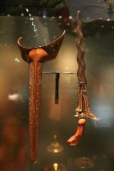

Senjata

Senjata

Keris adalah senjata tikam golongan belati (berujung runcing dan tajam pada kedua sisinya) dengan banyak fungsi budaya yang dikenal di kawasan Nusantara bagian barat dan tengah. Bentuknya khas dan mudah dibedakan dari senjata tajam lainnya karena tidak simetris di bagian pangkal yang melebar, seringkali bilahnya berkelok-kelok, dan banyak di antaranya memiliki pamor (damascene), yaitu terlihat serat-serat lapisan logam cerah pada helai bilah. Jenis senjata tikam yang memiliki kemiripan dengan keris adalah badik. Senjata tikam lain asli Nusantara adalah kerambit.
Pada masa lalu keris berfungsi sebagai senjata dalam duel/peperangan, sekaligus sebagai benda pelengkap sesajian. Pada penggunaan masa kini, keris lebih merupakan benda aksesori (ageman) dalam berbusana, memiliki sejumlah simbol budaya, atau menjadi benda koleksi yang dinilai dari segi estetikanya.
Penggunaan keris tersebar pada masyarakat penghuni wilayah yang pernah terpengaruh oleh Majapahit, seperti Jawa, Madura, Nusa Tenggara, Sumatera, pesisir Kalimantan, sebagian Sulawesi, Semenanjung Malaya, Thailand Selatan, dan Filipina Selatan (Mindanao). Keris Mindanao dikenal sebagai kalis. Keris di setiap daerah memiliki kekhasan sendiri-sendiri dalam penampilan, fungsi, teknik garapan, serta peristilahan.